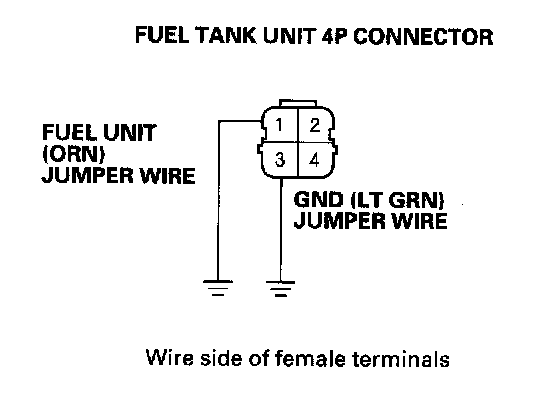
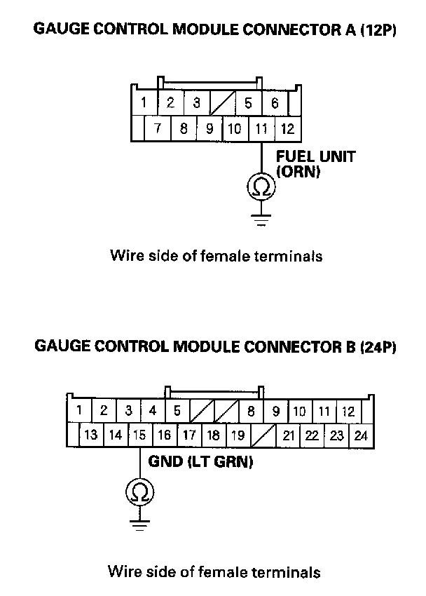

B1175
DTC B1175: Fuel Level Sensor (Fuel Gauge Sending Unit) Circuit OpenNOTE: If you are troubleshooting multiple DTCs, be sure to follow the instructions in B-CAN System Diagnosis Test Mode A.
1. Clear the DTCs with the HDS.
2. Turn the ignition switch OFF, and then back ON (II).
3. Wait for 30 seconds or more.
4. Check for DTCs with the HDS.
Is DTCs B1175 indicated?
YES - Go to step 5.
NO - Intermittent failure, the system is OK at this time. Check for loose or poor connections between the gauge control module and the fuel tank unit.
5. Turn the ignition switch OFF.
6. Disconnect the fuel tank unit 4P connector.
7. Disconnect the gauge control module connectors A (12P) and B(24P).

8. Connect the fuel tank unit 4P connector No. 1 and No. 3 terminals and body ground with jumper wires.

9. Check for continuity between the gauge control module connector A (12P) No, 11 terminal and body ground, and connector B (24P) No. 15 terminal and body ground respectively.
Is there continuity?
YES - Go to step 10.
NO - Repair open in the wire between the gauge control module and the fuel tank unit.
10. Do the fuel gauge sending unit test.
Is the fuel tank unit OK?
YES - Replace the gauge control module.
NO - Replace the fuel gauge sending unit.